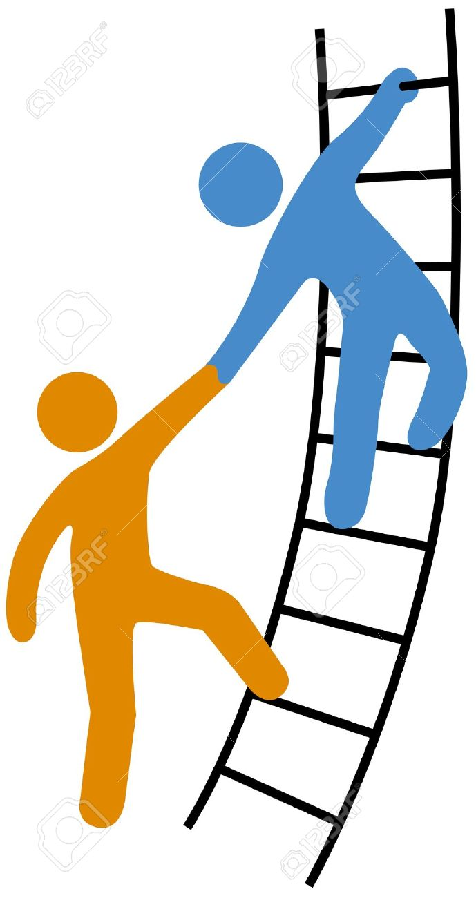

About Me
Don't wait for the storm to pass, instead learn to dance in the rain..
-
2007-2011
Humble Beginnings
A Summer Workshop with GridBots & an Internship @ L&T Infotech where I got hooked onto programming and started developing web crawlers & content management systems.
-

June 2011
A Bachelor in Information Technology!
Graduated from Mumbai University with a Bachelors in Information Technology and accepted a job at L&T Infotech
-

2011-2012
"Walking on water and developing software from a specification are easy if both are frozen”
Learnt valuable lessons in requirement gathering and development while developing and maintaining a web application involving a dozen stakeholders and hundreds of users.
-

2012-2014
Training, Development & Management
Certified in Web Applications Development with Microsoft .NET Framework 4 (70-515 TS)
And Designing and Developing Web Applications Using Microsoft .NET Framework 4 (70-519 PRO).
Won the company spot award for steering the project successfully during a critical release.
Took on the role of the Team Lead in 2013 and was responsible for delivery & QA compliance as per CMMI SVC 1.3. -
January 2014
The American Dream
Took on the role of Onsite Technical Lead for L&T Infotech @ Viacom Inc in Times Square New York.
Role includes requirement gathering & analysis, solution architecting, ensuring end to end delivery of all tasks and creating design documents. -
And
the story
goes on!